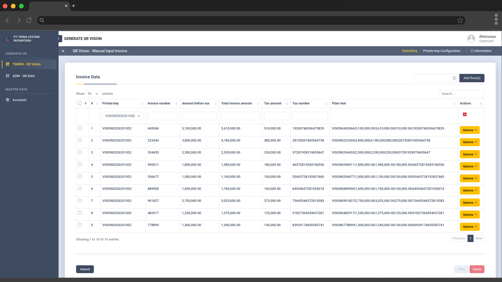

Generator QR Invoice melalui enkripsi AES dan konversi Base64 untuk PT. TMMIN (QR Vision), serta pembuatan dan penyematan QR Code otomatis pada PDF Kwitansi PT. ADM (QR Delvi).

Sistem ini dibangun menggunakan framework Django (Python) dan Django ORM (Object-Relational Mapper), dengan penyimpanan data pada PostgreSQL serta tampilan antarmuka yang dibangun menggunakan Bootstrap 5.